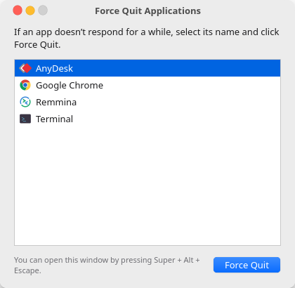
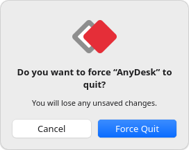

I cloned macOS Force Quit for Linux (and made Super+Alt+Esc work on Wayland)
If you've used a Mac, you know ⌘+⌥+esc. An app freezes, you press it, a small window lists your apps, you click Force Quit, and you're back to work. When I moved to Ubuntu, I missed that window more than anything else from macOS.
Linux has ways to kill apps (I go through all of them in this guide), but nothing as quick. So I built one: Force Quit Applications for Linux, opened with Super+Alt+Esc.

The hard part: Wayland won't list windows
On X11 you'd just ask the X server for every window and its PID. That's how xkill and wmctrl work. Wayland deliberately doesn't allow this: a client can see only its own windows. That's good for security, but it means a Force Quit app can't simply ask what's open.
The answer was systemd. When GNOME Shell launches an app, it puts the app in its own transient systemd scope, named after the app's desktop file:
$ cat /proc/23213/cgroup
0::/user.slice/user-1000.slice/user@1000.service/app.slice/app-gnome-org.gnome.Calculator-23213.scopeThat unit name contains org.gnome.Calculator, which maps straight to org.gnome.Calculator.desktop, which gives the app's name and icon. So the plan is to read /proc/*/cgroup for every process you own and group them by app. No compositor access needed.
The edge cases
- D-Bus activated apps, such as the terminal, start inside
dbus.servicerather than their own scope. For these, the tool matches the executable name against desktop files, but only for processes that haveWAYLAND_DISPLAYorDISPLAYin their environment. That filters out background daemons. - Chrome runs its main process in a hidden
com.google.Chromescope and its helpers in agoogle-chromescope. Groups are merged by walking parent PIDs, and the merged group takes the name of the desktop file that's visible in the app grid. - What counts as an app. macOS lists only apps that appear in the Dock. Here the rule is: if it isn't shown in the app grid (
NoDisplay=true), it isn't listed. That hides tray helpers and backup monitors. - Snap and Flatpak scopes (
snap.firefox.firefox-…,app-flatpak-…) are parsed too.
Killing it like a Mac does
macOS Force Quit doesn't politely ask the app to close. It sends SIGKILL. This tool does the same: it collects the app's processes and all of their descendants, then kills them. A frozen app can't ignore SIGKILL, and that's why it works.

Making GTK 4 look like macOS
The UI is a single GTK 4 window with custom CSS: traffic-light buttons, a #ececec window background, a white list with the #0064e1 selection blue, and a gradient default button. One surprise: my own ~/.config/gtk-4.0/gtk.css (an Orchis theme) loads at user priority, which beats normal application CSS. Loading the stylesheet at STYLE_PROVIDER_PRIORITY_USER + 1 keeps the Mac look on any theme.
Details copied from the Mac:
- The first app is preselected, so Return works straight away
- Frozen apps are shown in red as (Not Responding)
- Files is always at the bottom and gets Relaunch, like Finder
- Pressing the shortcut again brings the existing window forward (single-instance
Gtk.Application) - The selection turns grey when the window loses focus
Binding Super+Alt+Esc
install.sh adds a GNOME custom keybinding through gsettings. It appends to your existing custom shortcuts instead of replacing them. Super+Alt+Esc is free on stock GNOME: Alt+Esc cycles windows and Super+Esc restores shortcuts, but the combination of all three isn't taken.
git clone https://github.com/adgsenpai/AppleLinuxLikeForceQuit && cd AppleLinuxLikeForceQuit && ./install.shSource and issues on GitHub. A ⭐ helps other people find it.